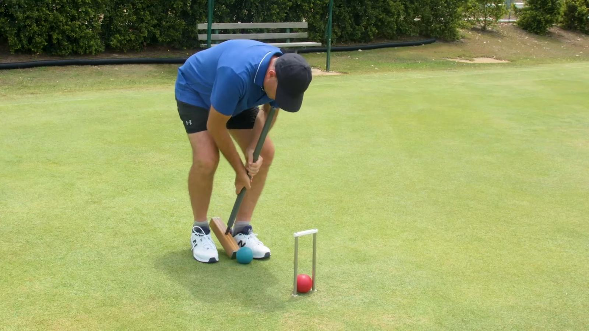

Film still: Croquet Australia, not taken at Stephens
Links
Useful croquet websites, tournament results and local community links for Stephens Croquet Club.
Open MyCroquetFurther afield
Croquet in Queensland, results, and the club's neighbours.
Useful links
Croquet websites
- Croquet Queensland (CAQ)
- MyCroquet
- Australian Croquet Association (ACA)
- World Croquet Federation
- Oxford Croquet
- Clarke Croquet
- Croquet World Online Magazine
Tournament results
- Croquet Scores
Games
- Association Croquet
- Golf Croquet
- 3D Croquet Lawn
- Glossary of Croquet Terms
Around the club
- Club camera (link to come)
- Weather station (link to come)
Local community
- Annerley-Stephens History Group